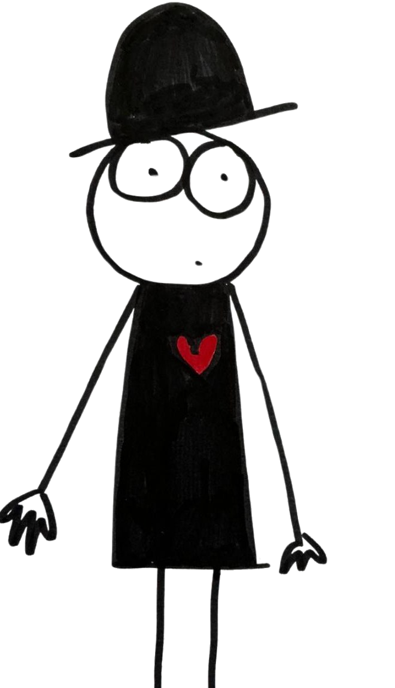
A curious series of short films inspiring young people
to tell stories full of wonder.
Enter into a living art gallery of the everyday. Inviting children to ask themselves, simply…
The Wndr(er) is a filmmaker before they know the word.
They pause where others move on,
framing the ordinary
until it becomes extraordinary.
The sway of trees in the wind. The reflection of clouds on water. The shadow stretching across a doorway. The texture of a weathered wall. The ripple of movement in a busy street. The way sound and silence shape a moment.
What’s the story here? How does this moment feel? Who are we meant to be watching, and what happens next?
They see life not as a blur, but as a series of shots and scenes, each one carefully framed by perspective and emotion. To them, every ordinary moment holds structure: a beginning, a middle, an end, and a feeling beating quietly at its heart.
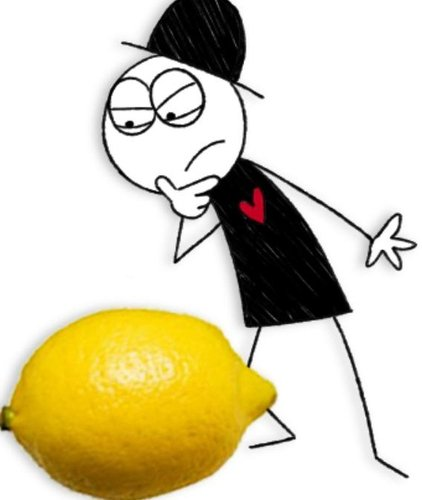
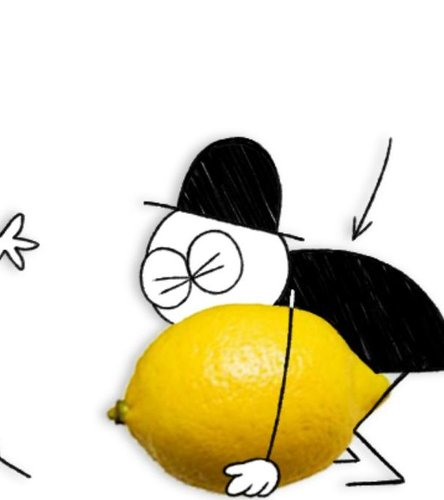
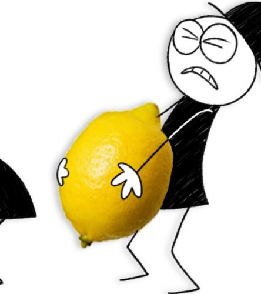
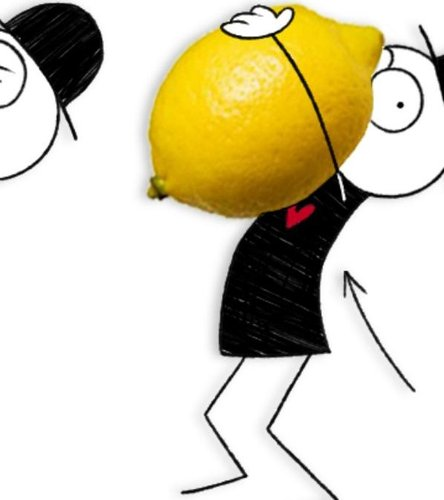
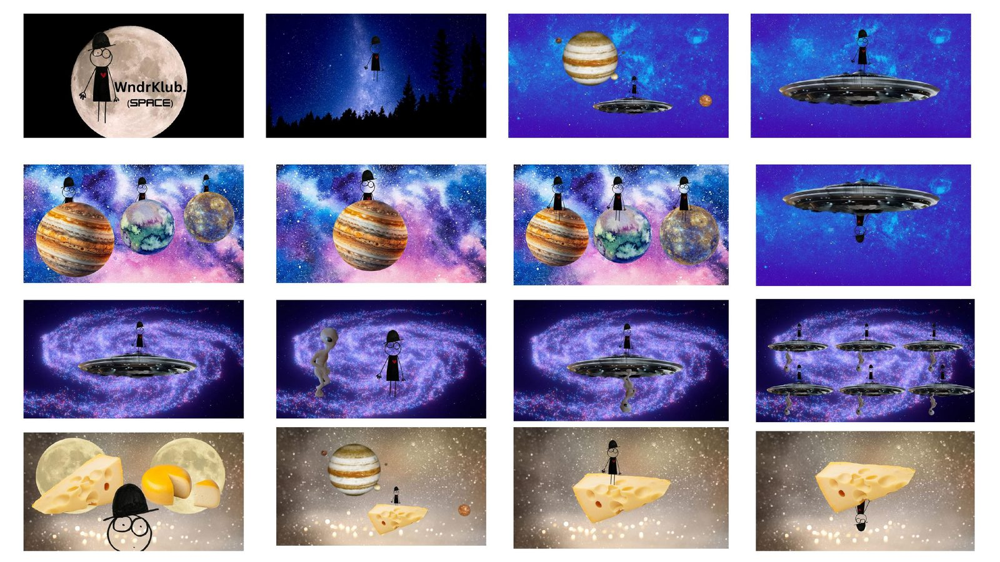
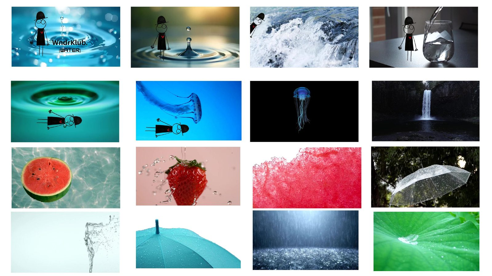
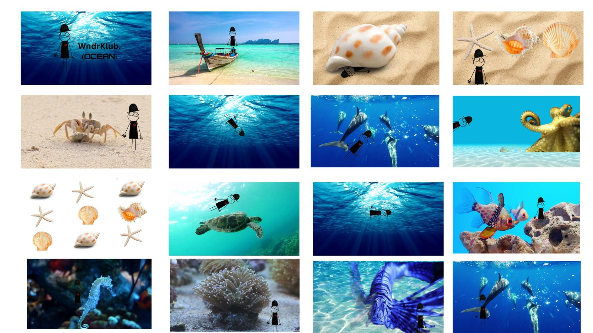
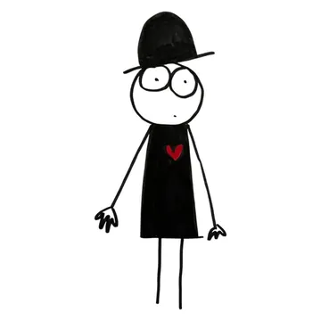
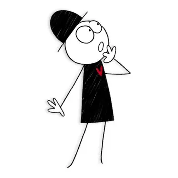
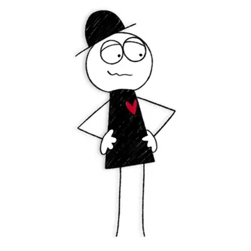
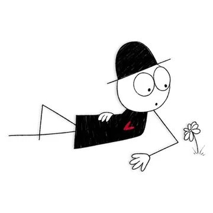
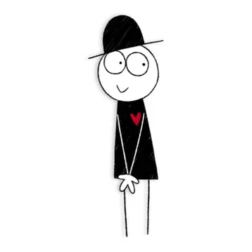
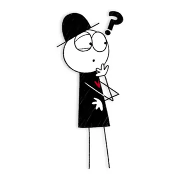
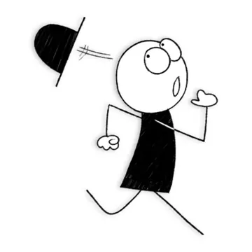
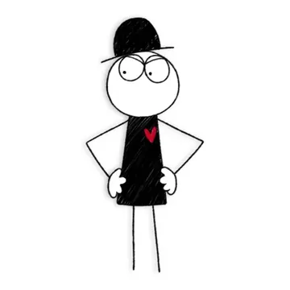
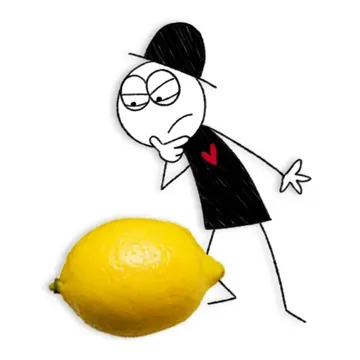
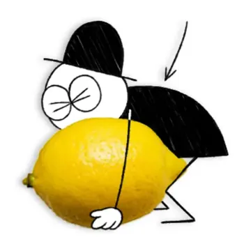
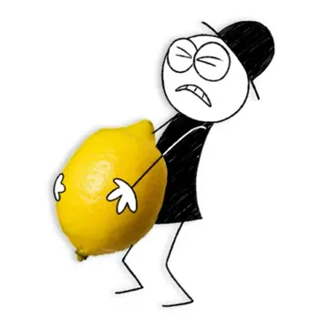
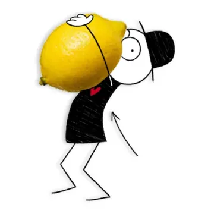
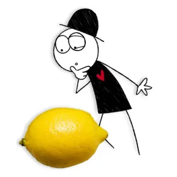
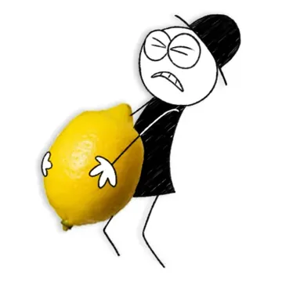
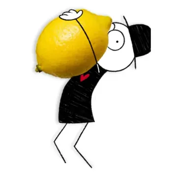
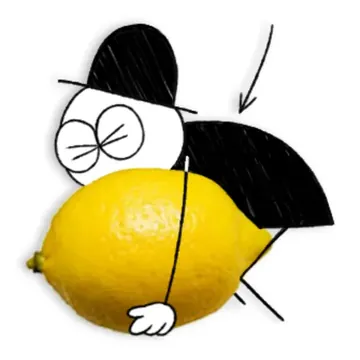
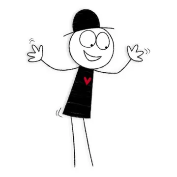
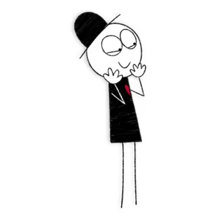
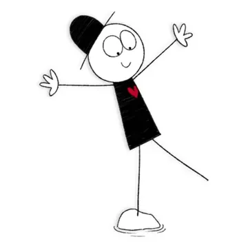
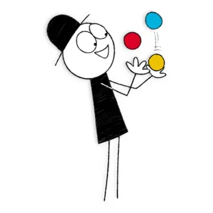
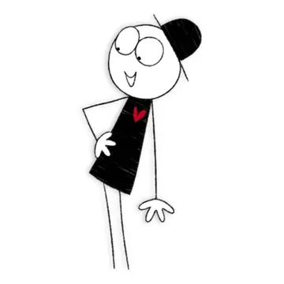
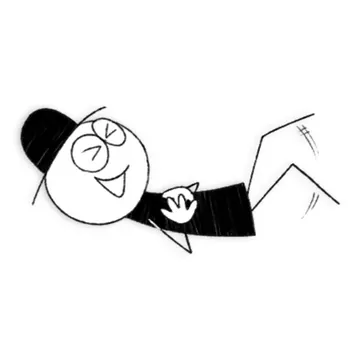
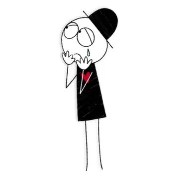
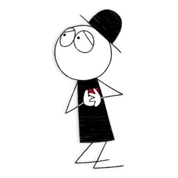
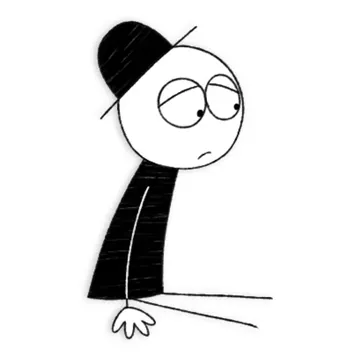
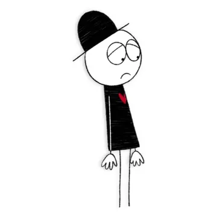
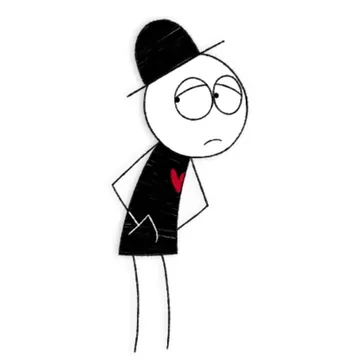
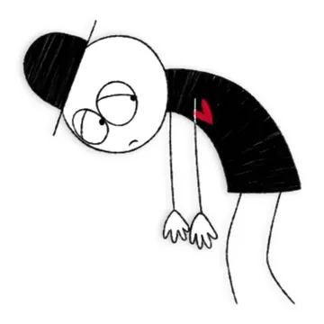
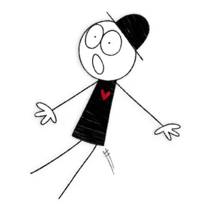
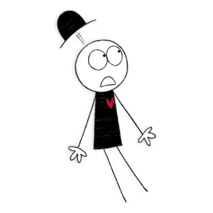
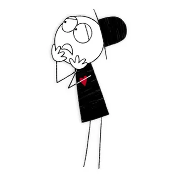
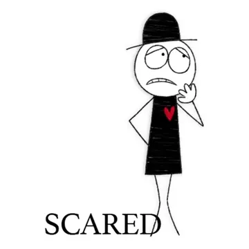
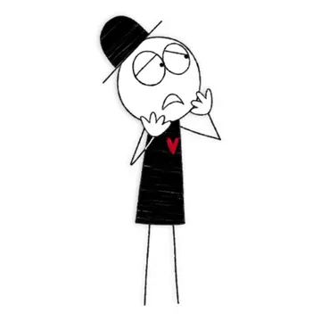
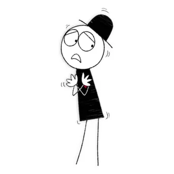
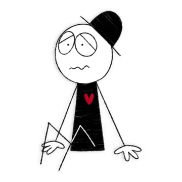
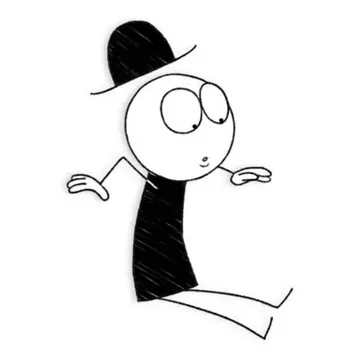
Wndr(er) test poses by Dixie O’Malley, Young Animator of the Year 2024 (2D Animation, 15–18).
Four young animators trained in Scotland, one brief: tell a story through comic frames. These are their tests.
WndrKlub is designed to live inside that ambition. It develops sequencing, visual storytelling and media literacy, aligning directly with Screen Scotland’s Film and Screen Education curriculum. It supports intentional play, child-led creativity and attuned adult facilitation, exactly what Realising the Ambition calls for.
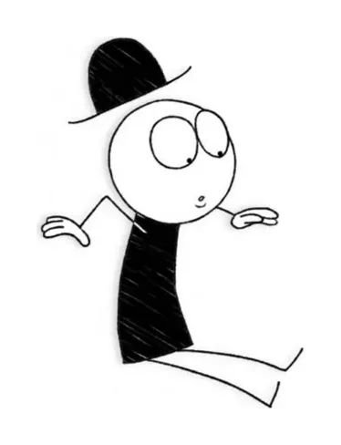